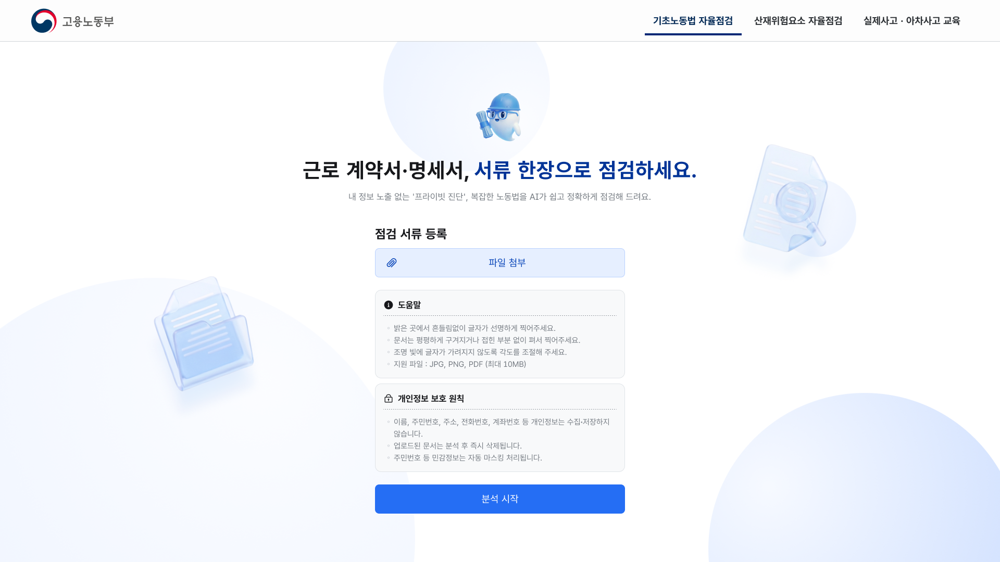
CASE STUDY 04 / 05
고용노동부 사업장 AI 자율점검 시스템 (공공 AX)
서류 분석부터 사업장 자율점검까지, 확인할 정보와 다음 행동이 연결되도록 설계했어요.
프로젝트 개요
서류와 현장 정보를 한 흐름으로 연결해 분석 결과 확인부터 후속 조치까지 이어지게 설계한 공공 서비스
Gov Service / Responsive Web / AI Analysis / UI/UX
누구나 이해하고 행동할 수 있는 AI 자율점검
근로계약서와 사업장 사진을 올린 뒤, 분석 결과를 확인하고 조치까지 이어지도록 흐름을 정리했어요.
흐름 중심 진단 구조 설계
계약서와 현장 사진 입력부터 AI 분석 결과 확인, 조치 안내까지 단계별로 연결했어요.
대국민 접근성 기반 UI 설계 (KRDS 기반)
KRDS 기준에 맞춰 연령과 디지털 숙련도에 관계없이 이해할 수 있는 정보 구조와 화면을 설계했어요.
사용자가 결과를 신뢰하고 검증할 수 있게 만드는 구조
OCR 결과를 직접 확인하고 검증할 수 있게 화면을 구성했어요.
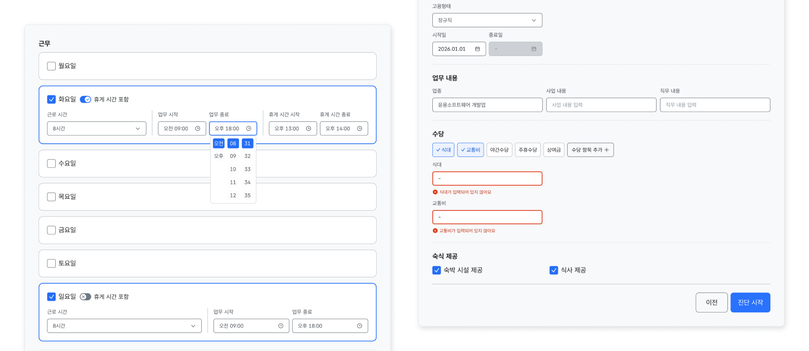
원문 기반 검증 구조 설계
OCR로 읽은 내용과 원문을 함께 확인해 잘못 인식된 항목을 사용자가 직접 검토하게 했어요.
오류 인지 중심 정보 구조
확인이 필요한 항목을 나눠 보여줘 검토할 부분과 이유를 바로 알게 했어요.
예외 케이스까지 정리한 구현 기준
시안과 함께 파일 비율·형식·확대 상태별 동작 기준을 정해 구현 결과를 함께 맞췄어요.
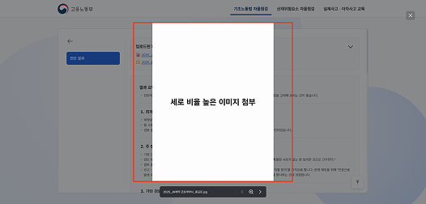
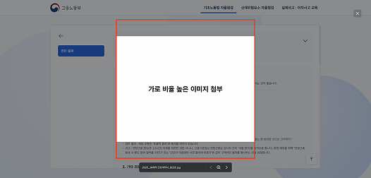
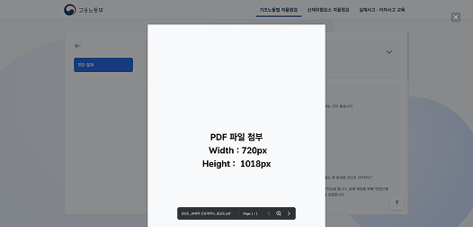
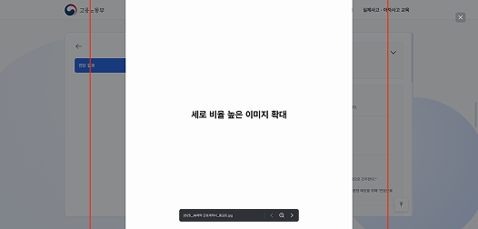
현장 위험을 이해시키는 보조 이미지
실제 사진이 부족한 위험 상황은 생성 이미지로 보완해 사용자가 상황을 쉽게 알아보게 했어요.
Firefly와 나노바나나로 위험 상황과 작업 환경을 설명하는 이미지를 만들었어요.
ChatGPT로 장면과 위험 요소를 구체화하고, 결과를 검토하며 프롬프트를 다듬었어요.
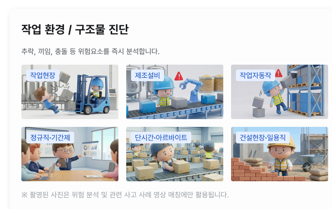
어려운 근로 · 현장 정보를 쉽게 전달
계약 내용과 현장 이미지를 함께 분석해 위험 요소를 빠르게 이해하고 바로 점검과 조치로 이어지게 했어요.
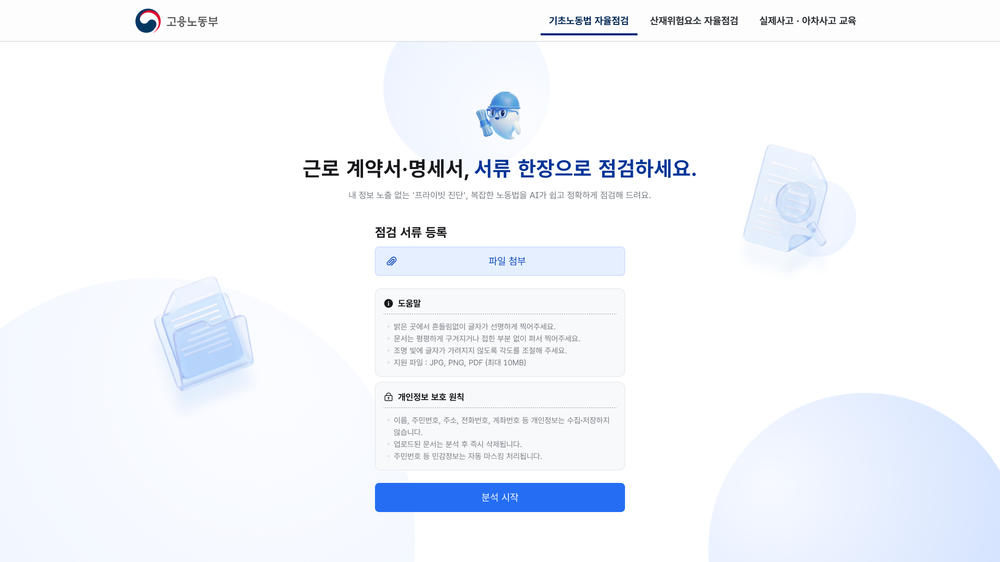
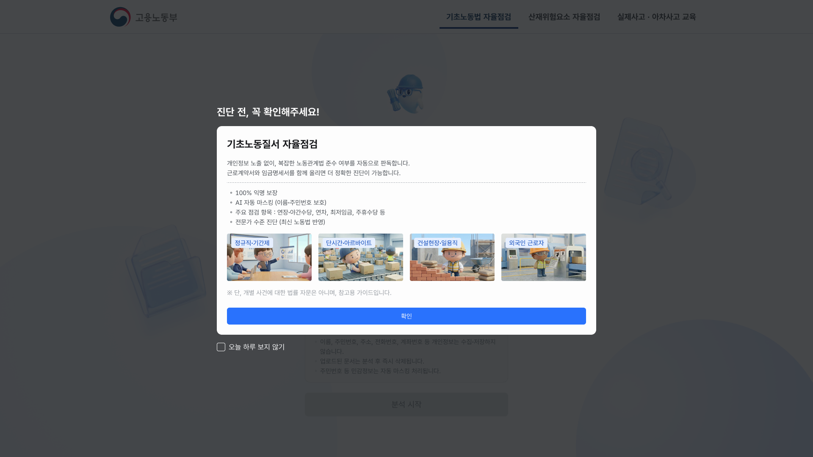
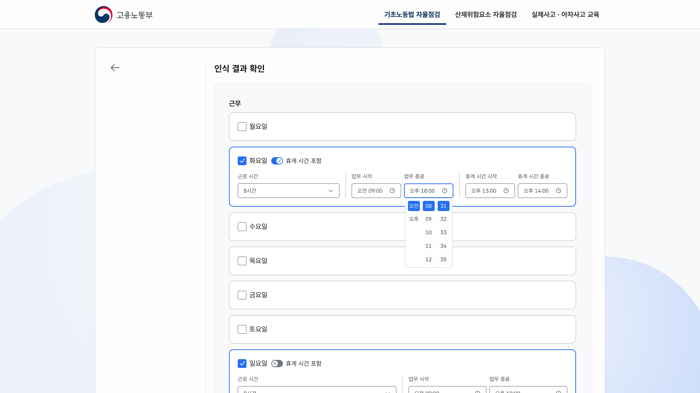
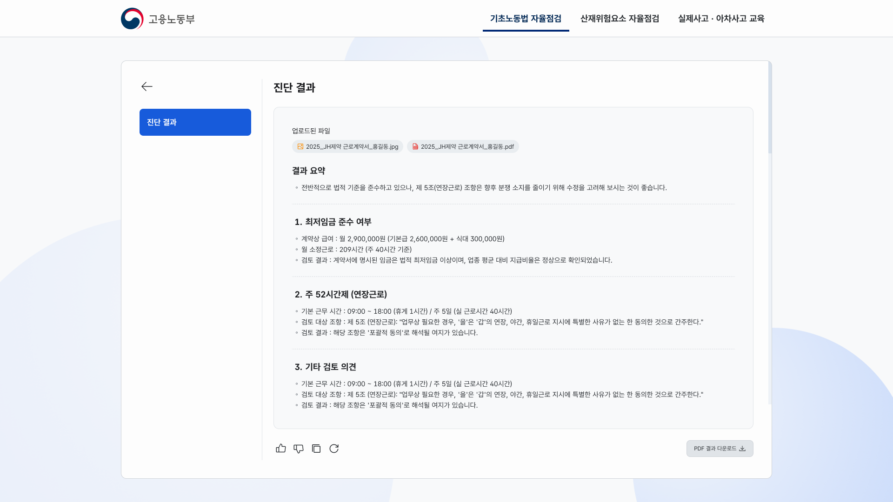
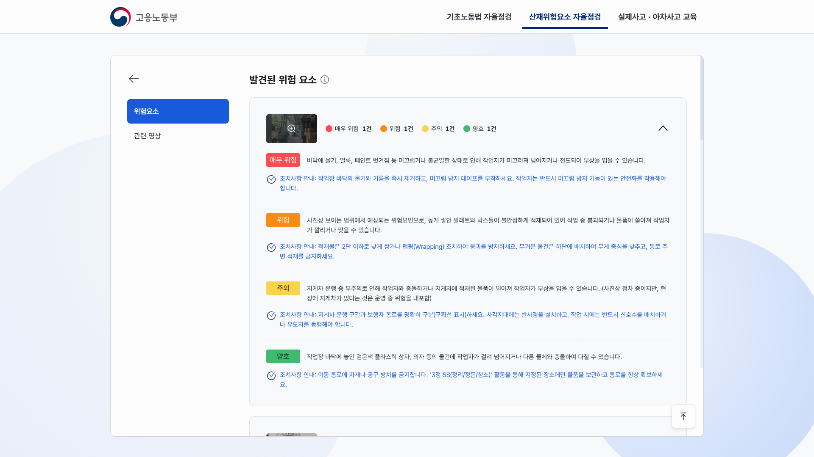
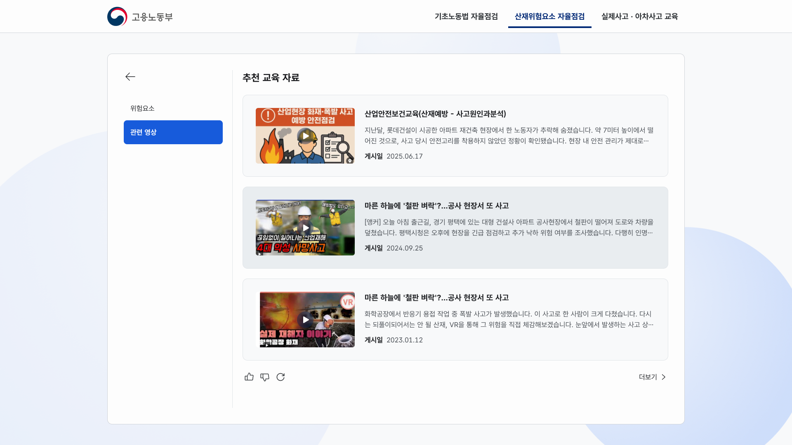
자율점검을 수행하는 흐름 중심 모바일 인터페이스
입력부터 분석 결과 확인, 조치 안내까지 한 과정으로 연결해 별도 해석 없이 이해 → 판단 → 조치가 이어지게 했어요.
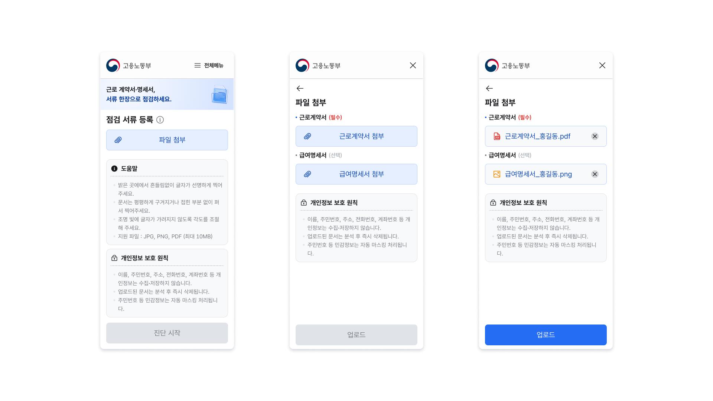
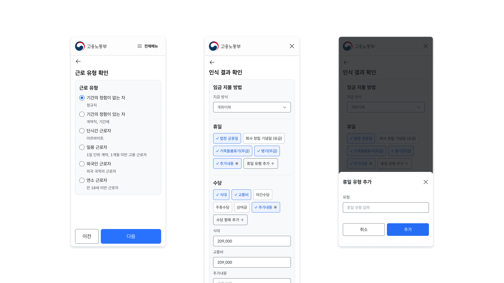
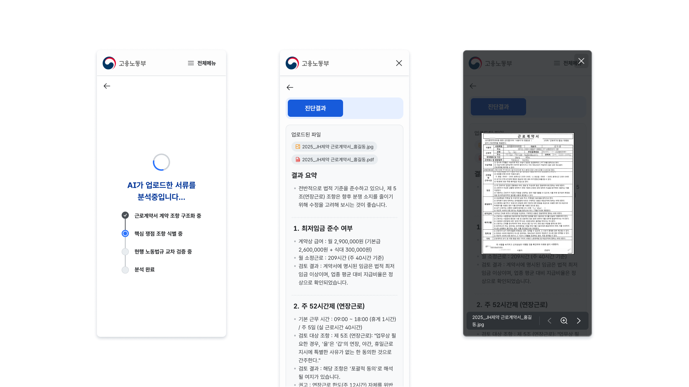
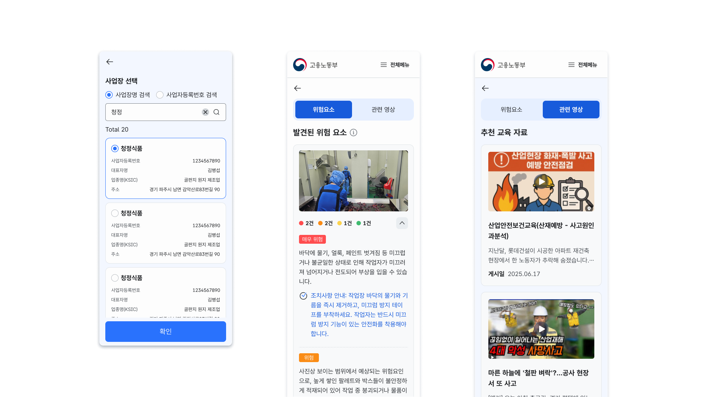